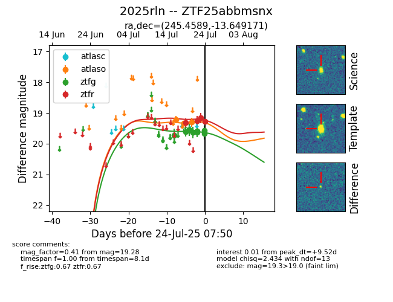

Target ZTF25abbmsnx at 2025-07-23 11:52, see:
FINK: fink-portal.org/ZTF25abbmsnx
Lasair: lasair-ztf.lsst.ac.uk/objects/ZTF25abbmsnx
ALeRCE: alerce.online/object/ZTF25abbmsnx
TNS: wis-tns.org/object/2025rln
YSE: ziggy.ucolick.org/yse/transient_detail/2025rln
alt names
ZTF25abbmsnx (ztf,fink)
2025rln (tns,yse)
coordinates:
equatorial (ra, dec) = (245.4589,-13.64917)
galactic (l, b) = (1.1047,+24.68926)
photometry
last ztfg=19.63, ztfr=19.17
8 ztfg, 3 ztfr detections
